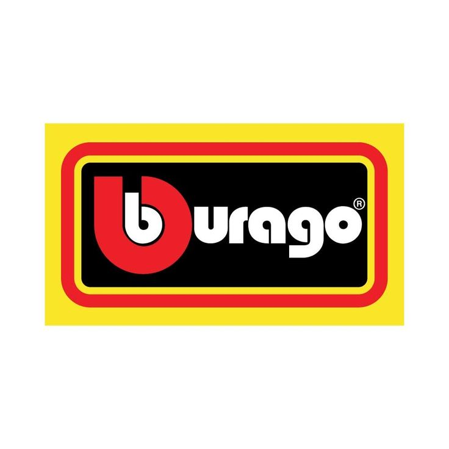

Bburago is founded
The brand began in Burago di Molgora, Italy. Its name reflects the town where the company was established.
DIECAST DISTRICT / BRAND ENCYCLOPEDIA 05

From accessible miniature cars to larger-scale display models, explore the Italian die-cast brand known for its wide range of road cars, supercars and motorsport subjects.
START HERE
Bburago is an Italian die-cast model brand that began in 1976 in Burago di Molgora, near Milan. The brand became known for producing model cars in several scales, including larger display-oriented replicas as well as smaller die-cast vehicles.
Its catalogue has included road cars, sports cars, supercars, classic vehicles and motorsport models. Bburago has also been strongly associated with Ferrari-licensed model cars, although the exact product ranges and licences vary over time.
Bburago is currently part of the May Cheong Group, which also owns Maisto. This independent guide introduces the brand and its collecting basics; it is not an official catalogue. Product details and availability can change by year and region.
QUICK NAVIGATION
THE STORY
The brand began in Burago di Molgora, Italy. Its name reflects the town where the company was established.
Bburago became known internationally for die-cast model cars in several scales. Larger models with opening features helped make the brand recognisable to hobbyists and gift buyers.
The brand developed a broad catalogue of European and international vehicles, including sports cars, classic models and detailed larger-scale replicas.
Following financial difficulties, Bburago became part of the May Cheong Group, the company behind Maisto. The brand continued under the new ownership.
Bburago became a prominent maker of Ferrari-licensed scale models after Mattel's previous arrangement ended. The exact licence and product arrangements have varied by period and market.
Bburago continues to offer model cars in different sizes and product families, including road cars and motorsport subjects. Current ranges depend on region and release year.
Brand ownership, licences and product ranges can change. For a specific model, check the copyright and licensing information printed on its packaging or base.
WHAT MAKES IT BBURAGO?
Bburago is known for producing models in different scales, from smaller die-cast cars to larger replicas designed for display.
The catalogue has included many performance-focused vehicles, including Italian exotics and well-known international sports cars.
Some larger models include opening doors, bonnets or other features. These are not present on every model, so check the exact product.
Different Bburago products suit different purposes. Some are compact toys, while others are larger display models with additional detailing.
Do not compare all Bburago models as if they belong to one price or detail category. Scale, product family, release and intended use make a big difference.
EXPLORE THE LINEUP
Product names and assortment details may differ by country and year. Always check the packaging for the exact series.
Compact cars suited to pocket-sized collecting and display. The selection can include sports cars, road cars and other popular subjects.
A popular display scale that provides more room for visible body and trim details while keeping models relatively compact.
Larger replicas that may include opening parts and more visible interior features, depending on the casting and edition.
A larger scale often chosen for display. Selected models can include opening doors, engine or cabin details, steering features or other moving parts.
Motorsport subjects have included Formula racing cars and other competition vehicles. Liveries and teams represented depend on the release and licensing period.
Bburago has produced Ferrari-licensed models in different scales and formats. Specific cars, liveries and features vary across product series.
Selected assortments and sets group vehicles together or combine them with play elements. Availability varies by market.
Some releases have distinctive packaging, finishes or subjects. Confirm the exact edition rather than assuming every special-looking package is limited.
SIZE & PROPORTION
Small models take up less room and make it easier to display many vehicles together. Actual dimensions depend on the size of the real vehicle.
A middle-sized display format with more visible space for body details than smaller models, while remaining relatively easy to store.
A bigger model can show more interior and exterior features. It also needs more shelf space than a 1:64 or 1:43 model.
A large scale often chosen as a centrepiece. Some models include opening features, but the exact specification depends on the casting.
At exact 1:18 scale, a 4,500 mm real car would be 250 mm long. At exact 1:43 scale, it would be about 105 mm. Real model dimensions can vary if the model is not made to an exact scale.
A WELL-KNOWN CONNECTION
Bburago has a prominent place in Ferrari model-car collecting. Its Ferrari-licensed models have appeared in multiple scales and product formats, giving collectors options ranging from compact miniatures to larger display replicas.
Ferrari models can represent road-going supercars, classic cars and motorsport machines. Details such as wheels, paint, interior, opening parts and racing decoration depend on the specific model and series.
Because licences and product ranges change over time, check the package and product description for the exact release. A Ferrari badge alone does not tell you the scale, level of detail or product family.
When comparing two Bburago Ferrari models, compare scale, release family, body details and condition—not just the car name.
LOOK CLOSER
Check the roofline, wheel arches, bumpers, proportions and overall silhouette against the real vehicle.
Look for an even finish and clear decoration. Race versions may include numbers, sponsor graphics and team colours.
Compare wheel design, tyre profile and fitment. Wheel detail can vary considerably across scales and series.
Larger models may reveal more cabin detail through the windows. The level of detail depends on the product.
Some models have opening doors, bonnet or other parts. Check that hinges and features are designed for that exact casting.
Look for scale, model name, copyright, licensing and product-family information on the base or packaging.
START YOUR COLLECTION
Decide whether you prefer compact 1:64 models or larger display pieces such as 1:43, 1:24 or 1:18.
Build around Ferrari, Italian cars, supercars, classic vehicles, Formula racing or another subject you enjoy.
Read the product name and packaging. Two models of the same car can belong to different product families.
Check paint, windows, wheels, axles, opening parts and packaging. Ask for clear photographs before buying online.
Measure your shelf before buying larger scales. A few 1:18 models can take up the space of many smaller cars.
Note the model name, scale, product series, purchase date and price. Photograph the model and its packaging.
MAKE IT YOURS
From compact cars to large-scale supercars, choose the Bburago models that belong in your collection.
Add cars to My Garage ↗BUY SMART
Make sure the listing's scale matches what you want and the space you have available.
Check product family, model name, licensing details and included accessories or display base.
For used models, request clear photos of all sides, the underside, packaging and any visible wear.
Compare reputable sellers and completed sales where possible. A high asking price does not prove rarity or value.
This guide cannot authenticate an individual model. For uncertain purchases, ask for additional photos and compare the item with official product information or a trusted specialist seller.
KEEP YOUR MODELS LOOKING GOOD
Long exposure to direct sunlight can affect paint and packaging. Choose a display location away from strong direct light.
Display cases and closed cabinets help reduce dust. Use a soft, clean cloth or gentle brush when needed.
Do not force doors, bonnets or other features. Use moving parts only as intended for that model.
Give larger scales enough shelf space and keep them away from edges where they could fall.
QUICK ANSWERS
Bburago began in 1976 in Burago di Molgora, Italy.
Bburago is part of the May Cheong Group, which also owns Maisto.
Bburago has produced models in several scales, including 1:64, 1:43, 1:24 and 1:18. Check each product for its exact scale.
Yes. Bburago has produced Ferrari-licensed models in multiple scales and product formats. The available subjects and specifications vary by release.
No. Opening features depend on the model, scale and product family. Check the exact product description.
A larger model has more physical space for visible details, but quality and features still depend on the specific casting and product range.
No. Age alone does not determine value. The exact model, condition, packaging, demand and authenticity all matter.
KEEP LEARNING
Diecast District is an independent collector project and is not affiliated with or endorsed by Bburago, May Cheong Group or Ferrari. Brand names and trademarks belong to their respective owners. Product details, licences and availability can change; verify individual releases using official product information.